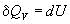
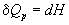
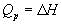

Тепловой эффект - количество теплоты, выделившееся или поглощенное химической системой при протекании в ней химической реакции.
Тепловой эффект обозначается символами Q или ΔH (Q = –ΔH). Его величина соответствует разности между энергиями исходного и конечного состояний реакции:
ΔH = Hкон. – Hисх. = Eкон. – Eисх.
Реакции, протекающие с выделением теплоты, проявляют положительный тепловой эффект (Q > 0, ΔH < 0) и называются экзотермическими.
Реакции, которые идут с поглощением теплоты из окружающей среды (Q 0), т.е. с отрицательным тепловым эффектом, являются эндотермическими.
В ходе реакции происходит разрыв связей в исходных веществах и образование новых связей в продуктах реакции. Поскольку образование связи идет с выделением, а ее разрыв - с поглощением энергии, то химические реакции сопровождаются энергетическими эффектами. Энергия выделяется, если рвущиеся связи в исходных веществах менее прочны, чем связи, образующиеся в продуктах реакции, в противном случае - энергия поглощается. Обычно энергия выделяется и поглощается в форме теплоты, т.е. химическая форма энергии преобразуется в тепловую. Таким образом, химические реакции сопровождаются тепловыми эффектами.
Тепловой эффект реакции при постоянном объеме и постоянном давлении. Теплоты образования веществ из элементов.
При протекании хим. Реакций происходит перестройка электронных оболочек реагентов, в рез. Чего могут рваться старые хим. связи и образовываться новые. Т. к. для разрыва хим. связей в исходных в-вах потребуется затратить определенную энергию, а при образовании связей в продуктах реакции она будет выделяться, то протекание рекации сопровождается изменением энергии системы. Если при при протекании химической реакции отсутствуют другие виды работы, кроме работы расширения системы, то Q=ΔU+1∫2 PdV
Обычно хим. реакции проводятся при постоянном объеме или давлении. При постоянном объеме Q=ΔUV, а при постоянном давлении Qp=ΔH=ΔUp+PΔV/
Объем (давление) системы должен оставаться постоянным на всем пути от начала процесса до его завершения, только при этих условиях будут справедливы полученные уравнения. Для идеальных газовых смесей вн. энергия не зависит ни от объема, ни от давления (ΔUv= ΔUp), а для реальных газовых систем при высоких давлениях можно принять ΔUv≈ ΔUp.
Теплота Qp=ΔH=ΔUp+PΔV – тепловой эффект при постоянном давлении.
Под тепловым эффектом хим. р-ции понимают количество теплоты, которое выделяется или поглощается в условиях а) процесс протекает необратимо при постоянных объеме и давлении; б) в системе не совершается никаких работ, кроме расширения системы; в) продукты реакции имеют ту же температуру, что и исходные вещества. Тепловой эффект реакции не зависит от пути процесса (промежуточных стадий), а определяется только начальным и конечным состоянием системы.
Комбинируя ур-я получаем: Qp-Qv= PΔV. Отсюда вытекает, что разность тепловых эффектов при постоянном давлении и постоянном объеме равна работе, которая совершается системой (ΔV>0) или над системой (ΔV<0) за счет изменения ее объема при завершении изобарно-изотермических реакций. При изохорном процессе вся теплота, подводимая или отводимая от рабочего тела, расходуется на изменение внутренней энергии.
Теплоты образования веществ из элементов.
Теплота любой реакции (даже пока не осуществленной на практике) может быть вычислена как разность между суммой теплот образования всех продуктов и суммой теплот образования всех реагентов в данной реакции.
Принято использовать теплоты образования соединений из чистых элементов в стандартных условиях. Такие стандартные условия чаще называют стандартным состоянием веществ:
1. Для твердых, жидких и газообразных веществ стандартное состояние определяется как наиболее распространенная форма элемента при 25 оС (298 К) и давлении 1 атмосфера (1 атм).
2. Теплота образования чистых элементов по определению равна нулю.
Во многих случаях эти реакции протекают при постоянном объеме или постоянном давлении. Из первого закона термодинамики следует, что при этих условиях теплота является функцией состояния. При постоянном объеме теплота равна изменению внутренней энергии: 
а при постоянном давлении - изменению энтальпии:   Эти равенства в применении к химическим реакциям составляют суть закона Гесса:
Из закона Гесса можно сформулировать два полезных следствия:
1. Тепловой эффект реакции равен алгебраической сумме теплот
образования продуктов реакции за вычетом суммы теплот образования
исходных веществ, т.е.
∆H = ∑ ∆H f − ∑ ∆H f . (3)
продукты исходн.
2. Тепловой эффект реакции равен алгебраической сумме теплот сгорания
исходных веществ за вычетом суммы теплот сгорания
продуктов реакции, т.е.
∆H = ∑ ∆H сгор. − ∑ ∆H сгор. . (4)
исходн. продукты
Закон Гесса дает возможность устанавливать тепловые эффекты реакций,
которые невозможно или трудно осуществить в экспериментальных условиях.